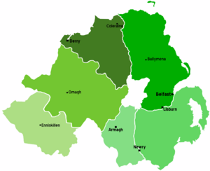
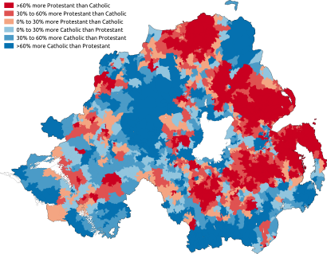
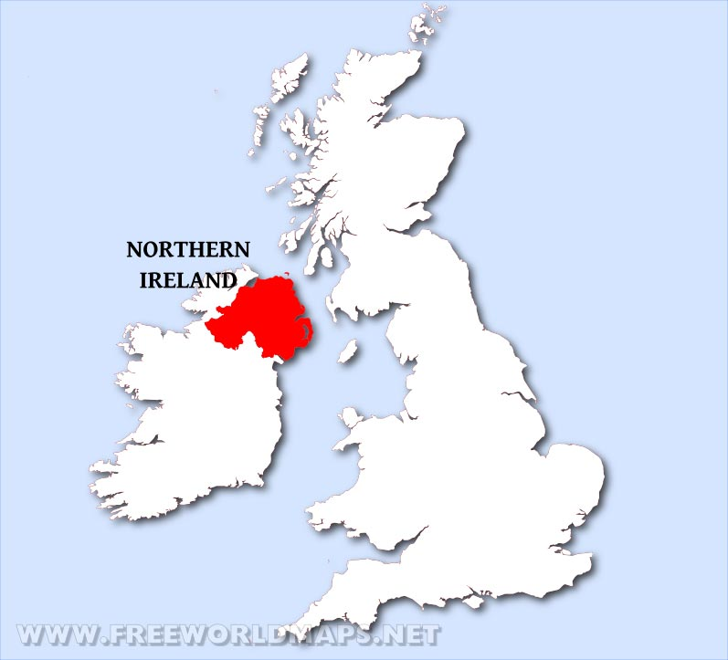
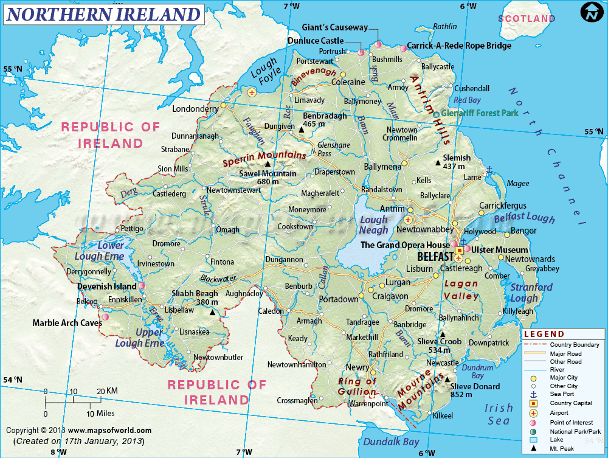

| Northern-Ireland actually doesn't have a flag, thus they merely use the flag of The United Kingdom! Northern Ireland was created in 1921, when Ireland was partitioned between Northern Ireland and Southern Ireland by an act of the British parliament. Unlike Southern Ireland, which would become the Irish Free State in 1922, the majority of Northern Ireland's population were unionists, who wanted to remain within the United Kingdom. |
|---|
| Main Page |
England |
Scotland |
Wales |
|---|
   
| Fun Facts |
|---|
| On average, it rains 157 days a year in Belfast, less than Scotland, but more than Dublin. |
| The 5,000-year-old henge, known as Giant’s Ring, is located near Belfast, and Iron Age hill fort remains still are present in the surrounding hills. |
| While Belfast stayed a small settlement during the Middle Ages, the city played a leading role in the Industrial Revolution and was Ireland’s largest city around the early part of the 20th century. |
| With a majority of the residents in the northern part of Ireland being Protestant descendants of colonists from Great Britain, the British parliament partitioned Northern and Southern Ireland in 1921, creating Northern Ireland. |
| Surrounded by mountains that create a micro-climate conducive to horticulture, Belfast contains 3,000 acres of parks, many of them forested. |